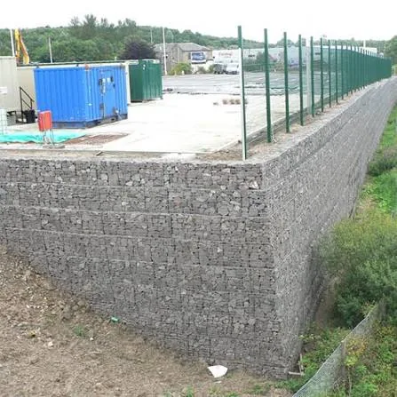

Construction and Labour Services for Civil Projects
Gabion work, stone and masonry work, concrete work and labour supply. Final scope, material responsibilities, quantities and site feasibility are confirmed from your project details.
Choose the service you need.
Each page explains what to prepare and what affects the quotation.

Gabion Wall Construction
Basket placing, stone filling, lacing and installation to your drawings.
View details
Gabion Retaining Walls
Retaining walls for embankments, roadsides and hillsides, built to the supplied design.
View details
Slope Protection & Erosion Control
Mattress, wall and pitching solutions for slopes and banks.
View details
Stone Pitching
Stone protection for embankments, canals and riverbanks.
View details
UCR Stone Wall
Uncoursed rubble masonry for retaining, foundation and boundary walls.
View details
Soling Work
Hand-packed stone or brick base under floors, pavements and foundations.
View details
PCC Work
Plain cement concrete bases and levelling layers.
View details
Trimix Flooring
Concrete flooring for industrial and commercial floors.
View details
Gabion Labour Supply
Labour for gabion assembly, placing, filling and wall installation.
View details
Civil Construction Labour Supply
Labour for stone work, concrete, soling and general site support.
View detailsOther civil work
Brickwork and plaster, and related civil finishing work, can be discussed on enquiry. Send the scope and site details and we will confirm whether and how it can be taken up; no page is dedicated to it yet.
What to include in any enquiry
- Location and approximate quantities or BOQ items
- Drawings, photographs and specifications
- Who supplies materials, equipment and labour
- Expected start date and duration
Not sure which service you need?
Describe the site and the problem. We will help you identify the right scope.